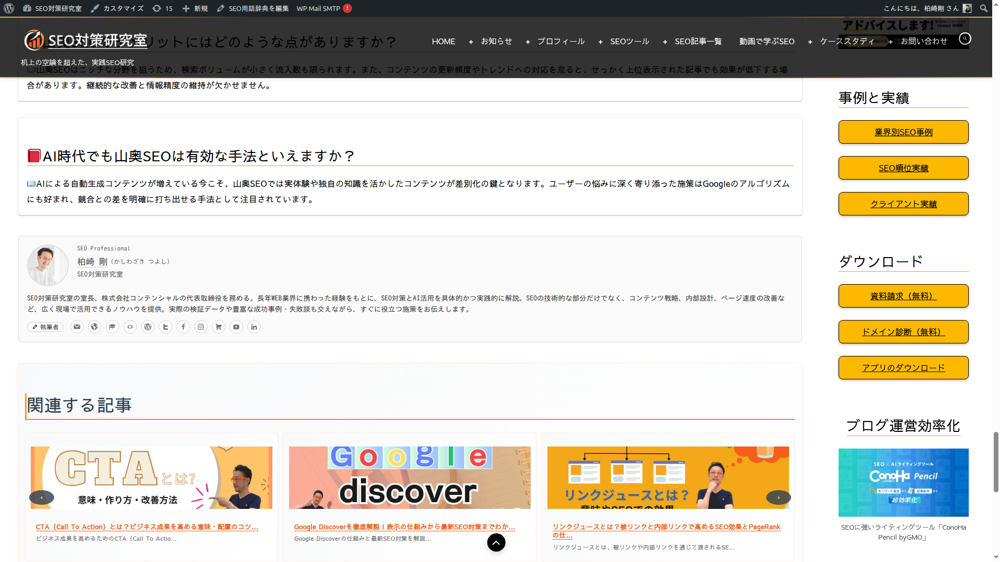

著者ボックス表示
記事ページに著者プロフィールカードを自動表示する機能について解説します。
著者ボックスの構成要素
プロフィール情報
円形プロフィール写真（80×80px）、著者名（リンク付き）、肩書、所属組織
経歴・役割
経歴テキスト、役割バッジ（執筆者 / 監修者 / 管理者）
SNS・連絡先
メールアイコン、SNSアイコン（40以上のサービスに自動対応）
フロントエンド表示例

著者タイプ
プラグインでは3種類の著者タイプを選択できます。タイプに応じて表示内容とスキーマ出力が変わります。
| 著者タイプ | 説明 | 固有の表示項目 |
|---|---|---|
| 人物（Person） | 個人の著者として情報を表示。最も一般的な設定です。 | 肩書、所属組織 |
| 組織（Organization） | チームやグループとして著者情報を表示します。 | 組織名 |
| 法人（Corporation） | 企業・法人として著者情報を表示します。 | 法人名 |
表示位置の設定
著者ボックスの挿入位置は 27種類 から選択できます。管理画面の「表示設定」タブで変更してください。
基本（4種）
| 表示位置 | 説明 |
|---|---|
| 記事上（top） | 記事本文の先頭に表示 |
| 記事下（bottom） | 記事本文の末尾に表示 |
| 記事上下両方（both） | 先頭と末尾の両方に表示 |
| 最後のHTMLタグの後 | コンテンツ内の最後のHTMLタグ直後に表示 |
見出しの前後（12種）
| 位置 | 対象見出し |
|---|---|
| 最初の見出しの上 | H1 / H2 / H3 / H4 / H5 / H6（各1種、計6種） |
| 最初の見出しの下 | H1 / H2 / H3 / H4 / H5 / H6（各1種、計6種） |
段落ベース（5種）
| 表示位置 | 説明 |
|---|---|
| 最初の段落の後 | 1番目の <p> タグ直後 |
| 2番目の段落の後 | 2番目の <p> タグ直後 |
| 3番目の段落の後 | 3番目の <p> タグ直後 |
| 最後の段落の直前 | 最後の <p> タグ直前 |
| 最後の段落の後 | 最後の <p> タグ直後 |
特殊要素（6種）
| 表示位置 | 説明 |
|---|---|
| 最初の画像の後 | 最初の <img> タグ直後 |
| 最初の引用の後 | 最初の <blockquote> タグ直後 |
| 最初のリストの後 | 最初の <ul> / <ol> タグ直後 |
| 最初のテーブルの後 | 最初の <table> タグ直後 |
| moreタグの直後 | <!--more--> タグ直後 |
| ホームページ | トップページにも著者ボックスを表示 |
最もよく使われる設定は 「記事下（bottom）」 です。記事を読み終えた読者に著者情報を提示でき、SEO効果も高い位置です。
ショートコードによる手動挿入
自動挿入に加えて、[ksas_author] ショートコードで任意の場所に著者ボックスを挿入できます。
| ショートコード | 動作 |
|---|---|
[ksas_author] |
現在の投稿の著者を表示 |
[ksas_author user_id="1"] |
指定ユーザーID の著者を表示 |
[ksas_author author="username"] |
指定ユーザー名の著者を表示 |
自動表示とショートコードは併用できます。ショートコードで挿入した場合も、設定で選択した自動挿入位置に著者ボックスが表示されます。
著者ボックスの表示フロー